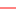

<!doctype html>
<html lang="en">
    <head>
        <meta charset="utf-8">
        <meta http-equiv="X-UA-Compatible" content="IE=edge">
        <meta name="viewport" content="initial-scale=1,user-scalable=no,maximum-scale=1,width=device-width">
        <meta name="mobile-web-app-capable" content="yes">
        <meta name="apple-mobile-web-app-capable" content="yes">
        <link rel="stylesheet" href="css/leaflet.css"><link rel="stylesheet" href="css/L.Control.Locate.min.css">
        <link rel="stylesheet" href="css/qgis2web.css"><link rel="stylesheet" href="css/fontawesome-all.min.css">
        <link rel="stylesheet" href="css/leaflet-search.css">
        <link rel="stylesheet" href="css/leaflet-control-geocoder.Geocoder.css">
        <link rel="stylesheet" href="css/leaflet-measure.css">
		
        <style>
        html, body, #map {
            width: 100%;
            height: 100%;
            padding: 0;
            margin: 0;
        }
        </style>
        <title>Transport Szynowy we Wrocławiu</title>
    </head>
    <body>
        <div id="map">
        </div>
        <script src="js/qgis2web_expressions.js"></script>
        <script src="js/leaflet.js"></script><script src="js/L.Control.Locate.min.js"></script>
        <script src="js/leaflet.rotatedMarker.js"></script>
        <script src="js/leaflet.pattern.js"></script>
        <script src="js/leaflet-hash.js"></script>
        <script src="js/Autolinker.min.js"></script>
        <script src="js/rbush.min.js"></script>
        <script src="js/labelgun.min.js"></script>
        <script src="js/labels.js"></script>
        <script src="js/leaflet-control-geocoder.Geocoder.js"></script>
        <script src="js/leaflet-measure.js"></script>
        <script src="js/leaflet-search.js"></script>
        <script src="data/Tortramwajowy_0.js"></script>
        <script src="data/Liniakolejowa_1.js"></script>
        <script src="data/Przystanek_kolejowy_2.js"></script>
        <script>
        var map = L.map('map', {
            zoomControl:true, maxZoom:20, minZoom:1
        })
		
        var hash = new L.Hash(map);
        map.attributionControl.setPrefix('<a href="https://github.com/tomchadwin/qgis2web" target="_blank">qgis2web</a> &middot; <a href="https://leafletjs.com" title="A JS library for interactive maps">Leaflet</a> &middot; <a href="https://qgis.org">QGIS</a>');
        
		var autolinker = new Autolinker({truncate: {length: 30, location: 'smart'}});
        L.control.locate({locateOptions: {maxZoom: 19}}).addTo(map);
        
		var measureControl = new L.Control.Measure({
            position: 'topleft',
            primaryLengthUnit: 'meters',
            secondaryLengthUnit: 'kilometers',
            primaryAreaUnit: 'sqmeters',
            secondaryAreaUnit: 'hectares'
        });
        measureControl.addTo(map);
        document.getElementsByClassName('leaflet-control-measure-toggle')[0].innerHTML = '';
        document.getElementsByClassName('leaflet-control-measure-toggle')[0].className += ' fas fa-ruler';
        
		var bounds_group = new L.featureGroup([]);
        
		function setBounds() {
            if (bounds_group.getLayers().length) {
                map.fitBounds(bounds_group.getBounds());
            }
            map.setMaxBounds(map.getBounds());
        }
        
		function pop_Tortramwajowy_0(feature, layer) {
            var popupContent = '<table>\
                    <tr>\
                        <th scope="row">Wykorzystanie</th>\
                        <td>' + (feature.properties['Wykorzystanie'] !== null ? autolinker.link(feature.properties['Wykorzystanie'].toLocaleString()) : '') + '</td>\
                    </tr>\
                    <tr>\
                        <td colspan="2"><strong>Funkcja_toru</strong><br />' + (feature.properties['Funkcja_toru'] !== null ? autolinker.link(feature.properties['Funkcja_toru'].toLocaleString()) : '') + '</td>\
                    </tr>\
                    <tr>\
                        <td colspan="2"><strong>Trakcja</strong><br />' + (feature.properties['Trakcja'] !== null ? autolinker.link(feature.properties['Trakcja'].toLocaleString()) : '') + '</td>\
                    </tr>\
                    <tr>\
                        <td colspan="2"><strong>Długość</strong><br />' + (feature.properties['Długość'] !== null ? autolinker.link(feature.properties['Długość'].toLocaleString()) : '') + '</td>\
                    </tr>\
                </table>';
            layer.bindPopup(popupContent, {maxHeight: 400});
        }

        function style_Tortramwajowy_0_0() {
            return {
                pane: 'pane_Tortramwajowy_0',
                opacity: 1,
                color: 'rgba(255,5,1,1.0)',
                dashArray: '',
                lineCap: 'square',
                lineJoin: 'bevel',
                weight: 1.0,
                fillOpacity: 0,
                interactive: false,
            }
        }
        map.createPane('pane_Tortramwajowy_0');
        map.getPane('pane_Tortramwajowy_0').style.zIndex = 400;
        map.getPane('pane_Tortramwajowy_0').style['mix-blend-mode'] = 'normal';
        
		var layer_Tortramwajowy_0 = new L.geoJson(json_Tortramwajowy_0, {
            attribution: '',
            interactive: false,
            dataVar: 'json_Tortramwajowy_0',
            layerName: 'layer_Tortramwajowy_0',
            pane: 'pane_Tortramwajowy_0',
            onEachFeature: pop_Tortramwajowy_0,
            style: style_Tortramwajowy_0_0,
        });
        bounds_group.addLayer(layer_Tortramwajowy_0);
        map.addLayer(layer_Tortramwajowy_0);
        
		function pop_Liniakolejowa_1(feature, layer) {
            var popupContent = '<table>\
                    <tr>\
                        <th scope="row">Wykorzystanie</th>\
                        <td>' + (feature.properties['Wykorzystanie'] !== null ? autolinker.link(feature.properties['Wykorzystanie'].toLocaleString()) : '') + '</td>\
                    </tr>\
                    <tr>\
                        <th scope="row">Liczba torów</th>\
                        <td>' + (feature.properties['Liczba torów'] !== null ? autolinker.link(feature.properties['Liczba torów'].toLocaleString()) : '') + '</td>\
                    </tr>\
                    <tr>\
                        <th scope="row">Trakcja</th>\
                        <td>' + (feature.properties['Trakcja'] !== null ? autolinker.link(feature.properties['Trakcja'].toLocaleString()) : '') + '</td>\
                    </tr>\
                    <tr>\
                        <td colspan="2"><strong>Numer linii</strong><br />' + (feature.properties['Numer linii'] !== null ? autolinker.link(feature.properties['Numer linii'].toLocaleString()) : '') + '</td>\
                    </tr>\
                    <tr>\
                        <th scope="row">Stacja początkowa</th>\
                        <td>' + (feature.properties['Stacja początkowa'] !== null ? autolinker.link(feature.properties['Stacja początkowa'].toLocaleString()) : '') + '</td>\
                    </tr>\
                    <tr>\
                        <th scope="row">Stacja końcowa</th>\
                        <td>' + (feature.properties['Stacja końcowa'] !== null ? autolinker.link(feature.properties['Stacja końcowa'].toLocaleString()) : '') + '</td>\
                    </tr>\
                </table>';
            layer.bindPopup(popupContent, {maxHeight: 400});
        }

        function style_Liniakolejowa_1_0() {
            return {
                pane: 'pane_Liniakolejowa_1',
                opacity: 1,
                color: 'rgba(83,83,83,1.0)',
                dashArray: '',
                lineCap: 'square',
                lineJoin: 'bevel',
                weight: 3.0,
                fillOpacity: 0,
                interactive: true,
            }
        }
        map.createPane('pane_Liniakolejowa_1');
        map.getPane('pane_Liniakolejowa_1').style.zIndex = 401;
        map.getPane('pane_Liniakolejowa_1').style['mix-blend-mode'] = 'normal';
        
		var layer_Liniakolejowa_1 = new L.geoJson(json_Liniakolejowa_1, {
            attribution: '',
            interactive: true,
            dataVar: 'json_Liniakolejowa_1',
            layerName: 'layer_Liniakolejowa_1',
            pane: 'pane_Liniakolejowa_1',
            onEachFeature: pop_Liniakolejowa_1,
            style: style_Liniakolejowa_1_0,
        });
        bounds_group.addLayer(layer_Liniakolejowa_1);
        map.addLayer(layer_Liniakolejowa_1);
        
		function pop_Przystanek_kolejowy_2(feature, layer) {
            var popupContent = '<table>\
                    <tr>\
                        <td colspan="2"><strong>Nazwa przystanku</strong><br />' + (feature.properties['Nazwa przystanku'] !== null ? autolinker.link(feature.properties['Nazwa przystanku'].toLocaleString()) : '') + '</td>\
                    </tr>\
                    <tr>\
                        <th scope="row">Wymiana pasażerska w 2022</th>\
                        <td>' + (feature.properties['Wymiana pasażerska w 2022'] !== null ? autolinker.link(feature.properties['Wymiana pasażerska w 2022'].toLocaleString()) : '') + '</td>\
                    </tr>\
                </table>';
            layer.bindPopup(popupContent, {maxHeight: 400});
        }

        function style_Przystanek_kolejowy_2_0() {
            return {
                pane: 'pane_Przystanek_kolejowy_2',
                radius: 6.0,
                opacity: 1,
                color: 'rgba(0,0,0,1.0)',
                dashArray: '',
                lineCap: 'butt',
                lineJoin: 'miter',
                weight: 2.0,
                fill: true,
                fillOpacity: 1,
                fillColor: 'rgba(255,255,255,1.0)',
                interactive: true,
            }
        }
        map.createPane('pane_Przystanek_kolejowy_2');
        map.getPane('pane_Przystanek_kolejowy_2').style.zIndex = 402;
        map.getPane('pane_Przystanek_kolejowy_2').style['mix-blend-mode'] = 'normal';
        
		var layer_Przystanek_kolejowy_2 = new L.geoJson(json_Przystanek_kolejowy_2, {
            attribution: '',
            interactive: true,
            dataVar: 'json_Przystanek_kolejowy_2',
            layerName: 'layer_Przystanek_kolejowy_2',
            pane: 'pane_Przystanek_kolejowy_2',
            onEachFeature: pop_Przystanek_kolejowy_2,
            pointToLayer: function (feature, latlng) {
                var context = {
                    feature: feature,
                    variables: {}
                };
                return L.circleMarker(latlng, style_Przystanek_kolejowy_2_0(feature));
            },
        });
        bounds_group.addLayer(layer_Przystanek_kolejowy_2);
        map.addLayer(layer_Przystanek_kolejowy_2);
            var title = new L.Control();
            title.onAdd = function (map) {
                this._div = L.DomUtil.create('div', 'info');
                this.update();
                return this._div;
            };
            title.update = function () {
                this._div.innerHTML = '<h2>Transport Szynowy we Wrocławiu</h2>';
            };
            title.addTo(map);
            var abstract = new L.Control({'position':'bottomright'});
            abstract.onAdd = function (map) {
                this._div = L.DomUtil.create('div',
                'leaflet-control abstract');
                this._div.id = 'abstract'

                    abstract.show();
                    return this._div;
                };
                abstract.show = function () {
                    this._div.classList.remove("abstract");
                    this._div.classList.add("abstractUncollapsed");
                    this._div.innerHTML = 'Mapa przedstawia sieć linii tramwajowych i kolejowych w obszarze miasta Wrocław. Dodatkowo zawiera informacje dotyczące lokalizacji przystanków kolejowych, które są rozmieszczone wzdłuż linii kolejowych.';
            };
            abstract.addTo(map);
        
		var osmGeocoder = new L.Control.Geocoder({
            collapsed: true,
            position: 'topleft',
            text: 'Search',
            title: 'Testing'
        }).addTo(map);
        document.getElementsByClassName('leaflet-control-geocoder-icon')[0]
        .className += ' fa fa-search';
        document.getElementsByClassName('leaflet-control-geocoder-icon')[0]
        .title += 'Search for a place';
        
		var baseMaps = {};
        L.control.layers(baseMaps,{' Przystanek_kolejowy': layer_Przystanek_kolejowy_2,' Linia kolejowa': layer_Liniakolejowa_1,' Tor tramwajowy': layer_Tortramwajowy_0,},{collapsed:false}).addTo(map);
        setBounds();
        map.addControl(new L.Control.Search({
            layer: layer_Przystanek_kolejowy_2,
            initial: false,
            hideMarkerOnCollapse: true,
            propertyName: 'Nazwa przystanku'}));
        document.getElementsByClassName('search-button')[0].className +=
         ' fa fa-binoculars';
        resetLabels([layer_Przystanek_kolejowy_2]);
        map.on("zoomend", function(){
            resetLabels([layer_Przystanek_kolejowy_2]);
        });
        map.on("layeradd", function(){
            resetLabels([layer_Przystanek_kolejowy_2]);
        });
        map.on("layerremove", function(){
            resetLabels([layer_Przystanek_kolejowy_2]);
        });
		
		var popup = L.popup();
		function onMapClick(e) {
			 popup
			 .setLatLng(e.latlng)
			 .setContent('Współrzędne: ' + e.latlng.lat.toFixed(6) + ', ' + e.latlng.lng.toFixed(6))
			 .openOn(map);
			}
		map.on('click', onMapClick);
		
		var layer_OpenStreetMap = L.tileLayer('https://{s}.tile.openstreetmap.org/{z}/{x}/{y}.png', {
			attribution: '© <a href="https://www.openstreetmap.org/copyright" target="_blank">OpenStreetMap</a> contributors'
		});
		map.addLayer(layer_OpenStreetMap);
		
		L.control.scale({
		  metric: true,
		  imperial: false,
		}).addTo(map);

		var centerWroclaw = [51.1079, 17.0385];
		var marginInDegrees = 30 / 111.32;  // Przybliżona liczba kilometrów na stopień (1 stopień = 111.32 km)

		var minLat = centerWroclaw[0] - marginInDegrees;
		var minLon = centerWroclaw[1] - marginInDegrees;
		var maxLat = centerWroclaw[0] + marginInDegrees;
		var maxLon = centerWroclaw[1] + marginInDegrees;

		map.setMaxBounds([
			[minLat, minLon],
			[maxLat, maxLon]
		]);
				
        </script>
    </body>
</html>
